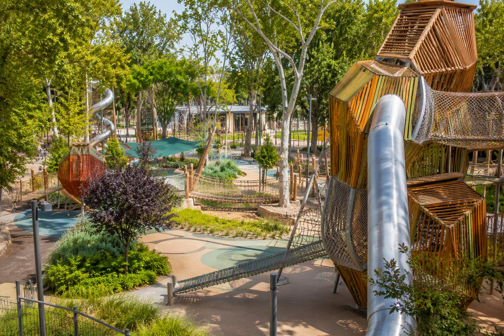
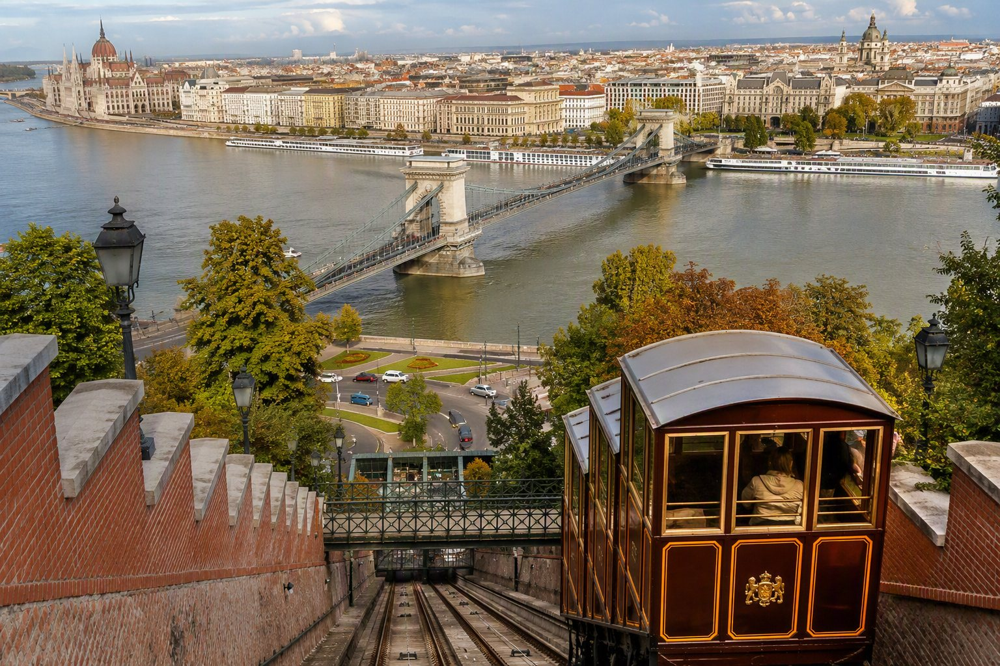
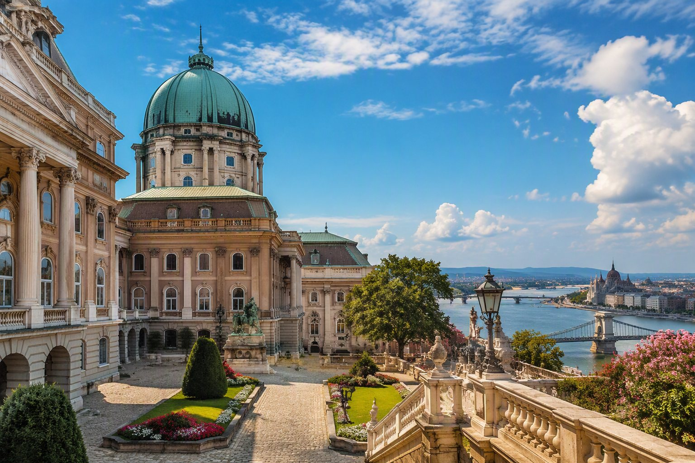
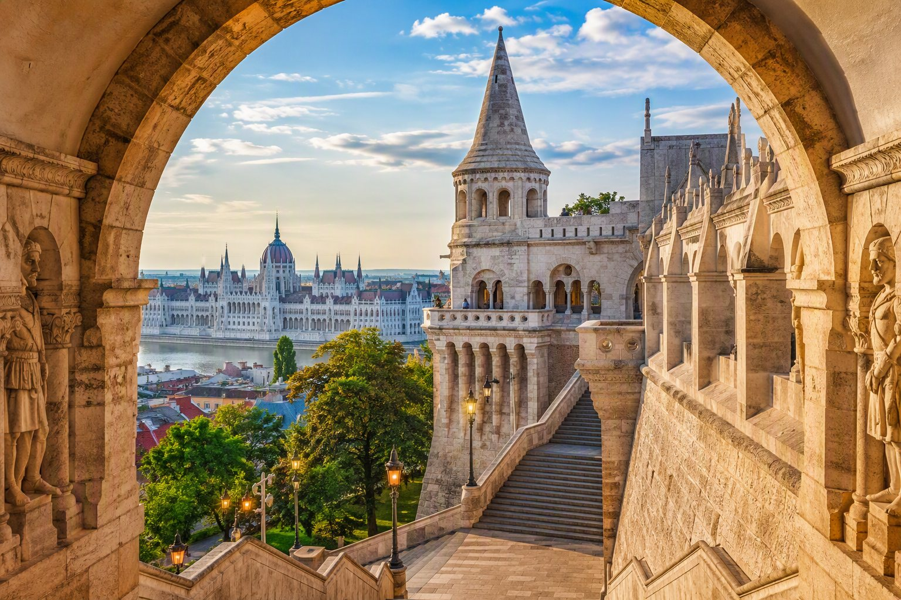
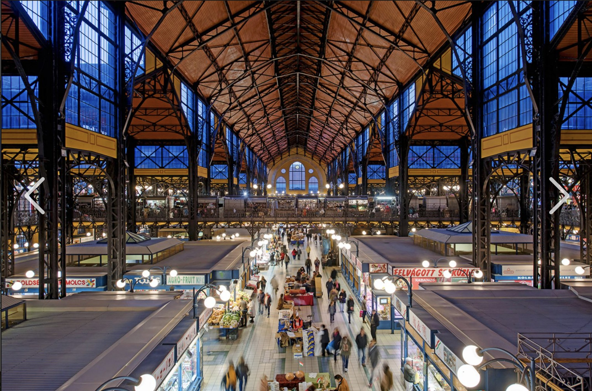
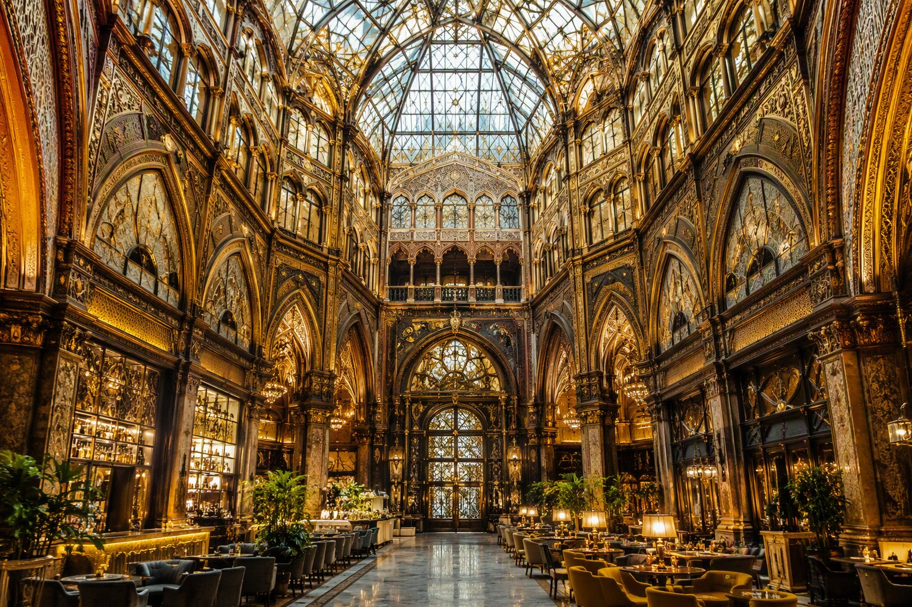
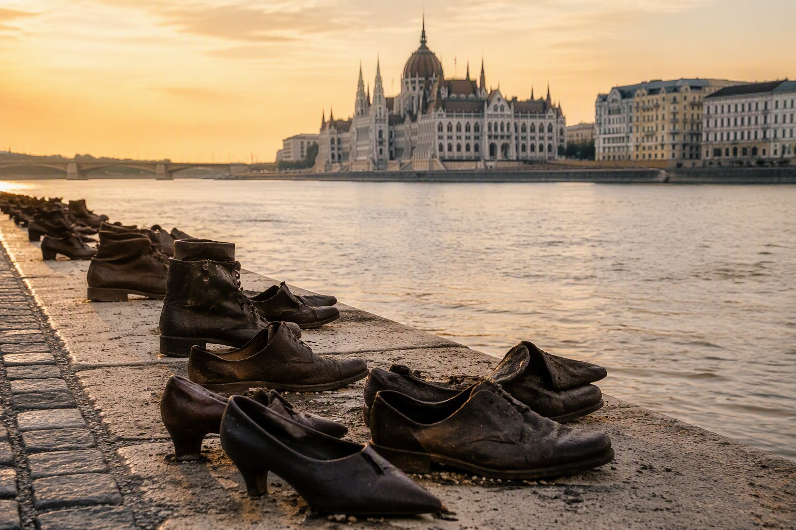
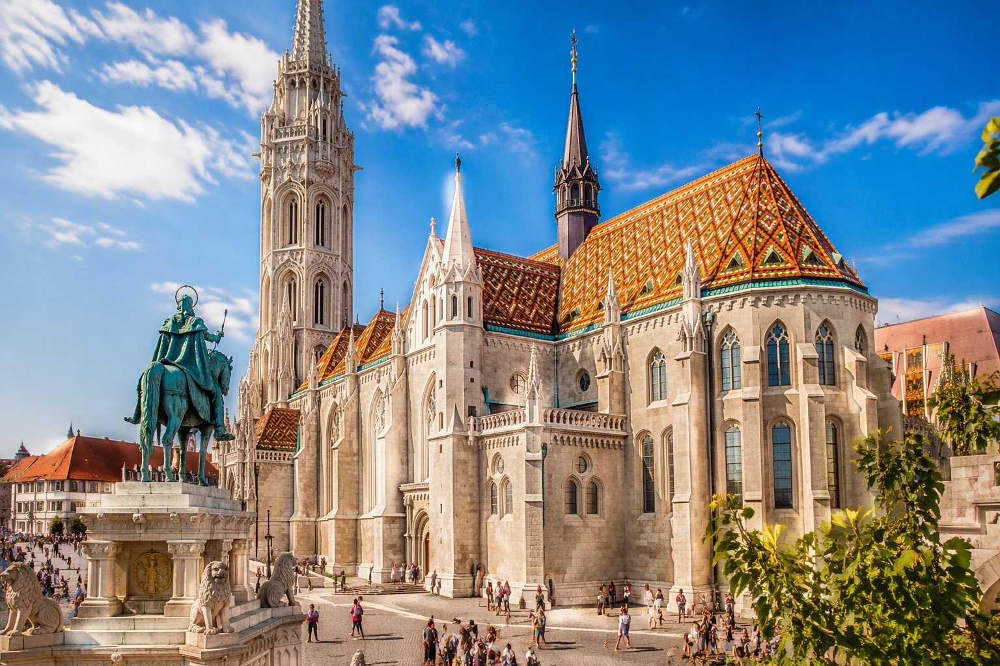
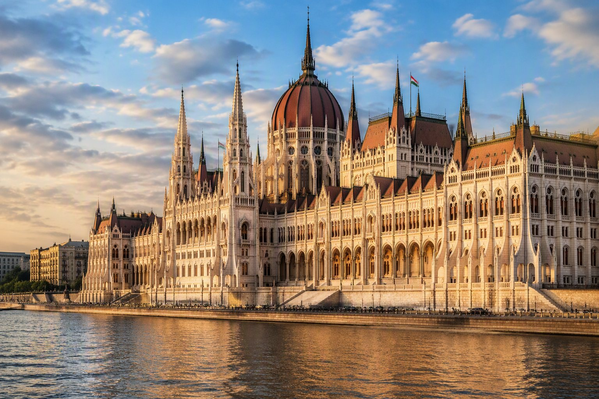

17:00
נחיתה ב־BUD
איסוף מזוודות, שירותים ומים. לא קובעים יעד נוסף לפני המלון.
מדריך אבא–בת מלא: רמת פירוט גבוהה בכל שלב, זמני מעבר מדלת לדלת, תחבורה ציבורית, המלצות אוכל לפי שעה ומיקום, סיכום יומי וכרטיסיות היסטוריות עם תמונות.
images ונפתחות מתוך האתר עצמו — ללא תלות בקישורי תמונות חיצוניים. יש להעלות את index.html ואת תיקיית images יחד.איסוף מזוודות, שירותים ומים. לא קובעים יעד נוסף לפני המלון.
מניחים מזוודות, מחליפים בגדים ויוצאים רק לאחר התרעננות.
תמונת פתיחה, סיבוב בכיכר והליכה עד Vigadó. לא צריך להספיק הכול — רק להרגיש את העיר.
סיבוב בשעת זהב. אם התור ארוך מ־25 דקות, דוחים ליום שני בבוקר.
בוחרים גלידת ורד, יושבים בכיכר ומסתכלים על הכיפה. היום הבזיליקה היא ביקור חיצוני.
מומלץ להישאר באזור הבזיליקה: פיצה, פסטה או מנה קלה. עדיפות למקום עם שירות מהיר, לא לארוחה ארוכה.
פותחים בדרך לאתר: סיפור קצר, פרט לחפש ושאלה לשיחה.

למה הוא מיוחד? כיכר מרכזית שמחברת את המלון, Váci והדנובה.
📚 סיפור היסטורי — 3 משפטים
הכיכר נקראת על שמו של המשורר ההונגרי מיהאי וֶרֶשְמַרְטִי, ופסלו ניצב במרכזה מאז סוף המאה ה־19. במשך דורות היא הייתה נקודת מפגש חשובה בפשט, וכיום היא מחברת בין רחוב Váci, בתי הקפה וטיילת הדנובה. מעניין לראות כיצד כיכר ספרותית והיסטורית הפכה גם למקום של שווקים, מופעי רחוב וחיי עיר מודרניים.
🔎 מה לחפש?
בניין ישן, חלון מעניין ואמן רחוב.
💬 שאלה לאבא ולבת
איזה סימן אומר לך שהגעת לעיר חדשה?

למה הוא מיוחד? תצפית מודרנית מעל מרכז פשט.
📚 סיפור היסטורי — 3 משפטים
הגלגל הענק הוא אטרקציה מודרנית ולא מונומנט עתיק, אבל הוא כבר הפך לחלק מוכר מקו הרקיע של מרכז פשט. מיקומו בכיכר Erzsébet מאפשר לראות מלמעלה את הכיפות, הצריחים והרחובות שנבנו בתקופות שונות. זו דרך מצוינת להבין כיצד בודפשט ההיסטורית והעיר העכשווית מתקיימות זו לצד זו.
🔎 מה לחפש?
את כיפת הבזיליקה ואת כיוון הדנובה.
💬 שאלה לאבא ולבת
איזה אתר נראה הכי מסקרן מלמעלה?

למה הוא מיוחד? כיפה גדולה וכיכר אלגנטית ליד המלון.
📚 סיפור היסטורי — 3 משפטים
הבזיליקה נקראת על שם אישטוון הראשון, המלך הראשון של הונגריה ומי שחיבר את הממלכה הנוצרית הצעירה למערב אירופה. בנייתה נמשכה במחצית השנייה של המאה ה־19, ובמהלכה אף קרסה הכיפה ונבנתה מחדש. כיום היא אחד המבנים הדתיים והלאומיים החשובים במדינה, והכיפה שלה היא מסימני ההיכר של פשט.
🔎 מה לחפש?
פסלים ועיטורים בחזית.
💬 שאלה לאבא ולבת
באיזה צבע היית מעצבת כיפה לעיר?
פנקייק, ביצים או טוסט. מגיעים מוקדם; המקום פועל ללא הזמנות.
מגיעים לתחנה התחתונה של הפוניקולר. בודקים תור לפני רכישת כרטיס.
עלייה קצרה. מסתכלים לאחור על הגשר והדנובה. אם התור מעל 25 דקות — עולים באוטובוס 16.
הליכה בין החצרות, ארמון הנשיא ונקודות התצפית. לא נכנסים למוזיאונים — החוץ והנוף מספיקים למסלול הזה.
מחפשים את הקשת שממסגרת את הפרלמנט ומצלמים את תמונת היום.
גג צבעוני ומבנה מרשים. כניסה פנימה רק אם השעות והאירועים מאפשרים.
מועדף: Pest-Buda Bistro לאוכל הונגרי נגיש. מהיר: כריך/סלט באזור Hess András tér. לא לבחור ארוחה כבדה מדי.
מקלחת, מזגן ושעה שקטה. זה חלק מהתכנון, לא זמן מבוזבז.
מכניסים את כתובת ההזמנה ל־BudapestGO ויוצאים עם מרווח. היעד: להגיע 10–15 דקות לפני.
ארוחת ערב וחוויה בסגנון Harry Potter. אין תוכנית מחייבת אחריה.
חזרה רגועה דרך המרכז או ישירות למלון.
פותחים בדרך לאתר: סיפור קצר, פרט לחפש ושאלה לשיחה.

למה הוא מיוחד? פוניקולר קצר עם מבט יפה לגשר השלשלאות.
📚 סיפור היסטורי — 3 משפטים
הפוניקולר נפתח בשנת 1870 כדי לחבר במהירות בין גדת הדנובה לבין גבעת הטירה. הוא היה כלי תחבורה שימושי לעובדים ולמבקרים, ולא רק אטרקציה תיירותית, אך נפגע קשות במלחמת העולם השנייה. לאחר שיקום ארוך הוא חזר לפעול בשנת 1986, ולכן כל נסיעה בו היא גם מפגש קצר עם תולדות התחבורה של העיר.
🔎 מה לחפש?
להסתכל לאחור בזמן העלייה.
💬 שאלה לאבא ולבת
מה עדיף: עלייה איטית עם נוף או נסיעה מהירה?

למה הוא מיוחד? ארמון עצום על גבעה מעל הדנובה.
📚 סיפור היסטורי — 3 משפטים
גבעת הטירה הייתה מרכז שלטוני של מלכי הונגריה במשך מאות שנים, והארמון שעליה השתנה שוב ושוב עם כל תקופה שלטונית. המתחם נפגע במצורים, בשריפות ובמלחמות, ובמיוחד בקרבות מלחמת העולם השנייה, ולאחר מכן שוקם. כיום הארמון משמש מוסדות תרבות, ובהם הגלריה הלאומית והמוזיאון לתולדות בודפשט, כך שמקום של מלכים הפך למקום של אמנות וזיכרון.
🔎 מה לחפש?
נקודה שבה גשר השלשלאות ישר מולכם.
💬 שאלה לאבא ולבת
מה היית שומרת בארמון: ספרייה או מעבדת המצאות?

למה הוא מיוחד? צריחים וקשתות כמו באגדה.
📚 סיפור היסטורי — 3 משפטים
למרות המראה הימי־ביניימי, המצודה נבנתה בשנים 1895–1902 כמרפסת תצפית חגיגית ולא כמבצר קרבי. האדריכל פרידייש שולק תכנן אותה בסגנון נאו־רומנסקי כדי להעניק לרובע הטירה מראה אגדי ומרשים. שבעת הצריחים מסמלים את שבעת השבטים המגיאריים שהתיישבו באגן הקרפטים בסוף המאה התשיעית.
🔎 מה לחפש?
קשת שממסגרת את הפרלמנט.
💬 שאלה לאבא ולבת
איזה סמל היית נותנת לצריח שמיני?

למה הוא מיוחד? כנסייה עם גג צבעוני יוצא דופן.
📚 סיפור היסטורי — 3 משפטים
שורשי הכנסייה מגיעים לימי הביניים, והיא שימשה במשך מאות שנים לאירועים מלכותיים חשובים, ובהם טקסי הכתרה. בתקופה העות׳מאנית היא שימשה כמסגד, ובהמשך חזרה לשמש ככנסייה. במאה ה־19 היא שוקמה בסגנון נאו־גותי, והגג הצבעוני שלה הפך לאחד הסמלים הבולטים של רובע הטירה.
🔎 מה לחפש?
דוגמה שחוזרת ברעפים.
💬 שאלה לאבא ולבת
איזו דוגמה היית מעצבת לגג?
ארוחת בוקר חגיגית ב־Szervita tér 3. מסיימים סביב 09:20 כדי להגיע בזמן לשוק.
מתחילים בקומת המזון עם פפריקה, סלמי, גבינות, מאפים ופירות; מרימים את הראש לגג הברזל והזכוכית; ועולים לגלריה העליונה למזכרות ולאוכל רחוב.
הולכים צפונה בקצב נעים, עוצרים בחנות או שתיים וממשיכים לכיוון Piarista köz.
מיצב ירח צף בקוטר 7 מטרים המבוסס על דימויי NASA. זהו מיצב חוץ במעבר קטן בין Váci utca לכיכר Március 15.
נכנסים ללובי, מסתכלים על תקרת הזכוכית, הקשתות והעיטורים. אפשר לבחור כאן גם ארוחת צהריים אלגנטית.
קיורטוש טרי לחלוקה. עדיף קינמון או אגוזים בלי מילוי כבד, כדי להשאיר מקום לצהריים.
Párisi Passage: הבחירה היפה והחווייתית ביותר, עם מטבח הונגרי ובינלאומי בתוך האולם ההיסטורי. Fakanál בשוק: מתאים אם מחליטים לאכול מוקדם בזמן הביקור בשוק. Bangkok Thai ליד השוק: חלופה אסייתית קלה יותר. המלצה: Párisi Passage בסביבות 13:00, כי הוא נמצא בדיוק על הציר.
גלריה, חנות ושירותים אמנותיים באותו מתחם, סמוך לכיכר Vörösmarty.
יוצאים דרך Vörösmarty tér אל טיילת הדנובה, ממשיכים צפונה ועוצרים לתמונות של גשר השלשלאות, בודה והפרלמנט. הליכה ישירה היא כ־30–35 דקות; כאן משאירים זמן לצילום ולעצירות.
מסתכלים על החזית והכיפה. הסיור הפנימי נשאר ביום ראשון, אם יש כרטיס.
מקלחת, טעינת טלפונים וזמן שקט.
TOKIO: הבחירה המועדפת לטיול אבא־בת, צעירה, יפנית וקרובה לדנובה. Textúra: בחירה יוקרתית וניסיונית יותר, עם מטבח הונגרי־בינלאומי מודרני. בוחרים מקום אחד ומזמינים מראש.
אם בחרתם TOKIO, מסיימים ליד הדנובה. אם בחרתם Textúra, חוזרים ברגל דרך אזור הבזיליקה למלון.
פותחים בדרך לאתר: סיפור קצר, פרט לחפש ושאלה לשיחה.

למה הוא מיוחד? זהו השוק המקורה הגדול והוותיק בבודפשט, המשלב אוכל מקומי, אדריכלות מרשימה וחיי יום־יום.
📚 סיפור היסטורי — 3 משפטים
השוק נפתח בשנת 1897 כחלק מתוכנית עירונית לשפר את בטיחות המזון ואת מערך האספקה לבודפשט. האדריכל Samu Pecz תכנן אולם נאו־גותי עצום עם שלד ברזל וגג צבעוני מאריחי Zsolnay, ולכן המבנה נראה כמעט כמו תחנת רכבת חגיגית. המבנה נפגע במלחמת העולם השנייה, שוקם בהמשך, וכיום הוא מחבר בין מסחר מקומי, אוכל הונגרי ותיירות.
🔎 מה לחפש?
שרשראות פפריקה, סלמי, דבש וחמוצים בקומת הקרקע; שלד הברזל והגג הצבעוני מעל; ועבודות יד בגלריה העליונה.
💬 שאלה לאבא ולבת
אם הייתם מרכיבים סל טעימות שמייצג את הונגריה בשלושה פריטים בלבד — מה הייתם בוחרים?

למה הוא מיוחד? לובי שנראה כמו ארמון ומעבר קניות היסטורי.
📚 סיפור היסטורי — 3 משפטים
באתר נפתח בשנת 1817 אחד ממרכזי הקניות המודרניים הראשונים בהונגריה, בהשראת מעברים מסחריים מקורים בפריז. המבנה המאוחר יותר שילב סגנונות גותיים, מוריים ואר־נובו, ושימש לאורך השנים גם בנק, חנויות ומשרדים. לאחר יותר מ־85,000 שעות שיקום הוא נפתח מחדש בשנת 2019 כמלון וכמעבר ציבורי מפואר.
🔎 מה לחפש?
שלושה חומרים שונים בתקרה ובקירות.
💬 שאלה לאבא ולבת
איזה סוד יכול להסתתר במסדרון כזה?

למה הוא מיוחד? אחד מסמלי בודפשט על גדת הדנובה.
📚 סיפור היסטורי — 3 משפטים
בניין הפרלמנט נבנה בתקופה שבה בודפשט צמחה במהירות כבירת הונגריה, והושלם בתחילת המאה ה־20 לפי תוכניתו של האדריכל אימרה שטיינדל. הסגנון הנאו־גותי, הכיפה והחזית הארוכה על הדנובה נועדו לבטא את החשיבות הלאומית של המדינה ושל מוסדותיה. המבנה כמעט סימטרי, משום שבעבר פעלו בו שני בתי פרלמנט נפרדים.
🔎 מה לחפש?
הסימטריה של שני הצדדים והכיפה המרכזית.
💬 שאלה לאבא ולבת
איזה חוק היית מציעה לעיר ידידותית לילדים?
במלון או במאפייה קרובה. יוצאים עם מים וכובע.
20–25 דקות של התבוננות שקטה. קוראים את כרטיסיית ההיסטוריה, מחפשים את סוגי הנעליים ומשאירים זמן לשאלה אחת.
אם יש כרטיס לסיור — שעת הכרטיס קובעת. בלי סיור: כיכר Kossuth, חזית הנהר וצילום. בעונה שעות המבקרים הרשמיות הן 08:00–18:00.
כניסה, בית הכנסת, המוזיאון, עץ החיים ופארק ההנצחה. בקיץ ביום ראשון פורסמו שעות 10:00–20:00; יש לבדוק שוב לפי לוח דתי. לבוש מכבד וכרטיס מראש מומלצים.
מים ושירותים לפני מעבר ל־Nyugati. לא מוסיפים עוד אתר.
נשנוש/משקה והצצה לאולם ההיסטורי. לא להפוך זאת לארוחת צהריים מלאה אם רוצים מבחר ב־Westend.
קניות בקצב ברור: 60 דקות סיבוב ראשון, 30–40 דקות צהריים, ואז עוד שעה לרכישות. קובעים תקציב אישי מראש.
מנוחה קצרה אך חשובה לפני IKONO, ארוחת הערב והשיט.
כ־60 דקות ב־12 חללים אינטראקטיביים. ביום ראשון האתר הרשמי מפרסם 10:00–19:00, לכן לא לאחר.
ארוחת ערב לפני השיט. להזמין מקום ולציין שיש לכם שיט אחר כך כדי לשמור על קצב שירות.
מומלץ להגיע 20–30 דקות לפני ההפלגה לצ׳ק־אין.
הפרלמנט, הגשרים והטירה מוארים. לבחור מול הספק שיט משפחתי ולא Boat Party.
פותחים בדרך לאתר: סיפור קצר, פרט לחפש ושאלה לשיחה.

למה הוא מיוחד? אנדרטה שקטה שמספרת סיפור אנושי בלי בניין גדול.
📚 סיפור היסטורי — 3 משפטים
האנדרטה הוצבה ב־16 באפריל 2005 ונוצרה בידי במאי הקולנוע Can Togay והפסל Gyula Pauer. שישים זוגות נעלי ברזל בסגנון שנות ה־40 מנציחים קורבנות שנרצחו על גדת הדנובה בידי אנשי צלב החץ בשנים 1944–1945. הבחירה בנעליים אישיות — של גברים, נשים וילדים — הופכת מספר גדול של קורבנות לזיכרון אנושי שאפשר לראות ולהרגיש.
🔎 מה לחפש?
נעלי גברים, נשים וילדים.
💬 שאלה לאבא ולבת
למה בחרו דווקא בנעליים כסמל?
למה הוא מיוחד? אחד מסמלי בודפשט על גדת הדנובה.
📚 סיפור היסטורי — 3 משפטים
בניין הפרלמנט נבנה בתקופה שבה בודפשט צמחה במהירות כבירת הונגריה, והושלם בתחילת המאה ה־20 לפי תוכניתו של האדריכל אימרה שטיינדל. הסגנון הנאו־גותי, הכיפה והחזית הארוכה על הדנובה נועדו לבטא את החשיבות הלאומית של המדינה ושל מוסדותיה. מעניין שהמבנה כמעט סימטרי, משום שבעבר פעלו בו שני בתי פרלמנט נפרדים.
🔎 מה לחפש?
הסימטריה של שני הצדדים.
💬 שאלה לאבא ולבת
איזה חוק היית מציעה לעיר ידידותית לילדים?

למה הוא מיוחד? בית הכנסת הגדול באירופה ומפתח להבנת יהדות בודפשט.
📚 סיפור היסטורי — 3 משפטים
בית הכנסת נבנה בשנים 1854–1859 בתכנון האדריכל הווינאי Ludwig Förster, בסגנון תחייה מורי עשיר בקשתות, דוגמאות גיאומטריות וכיפות. הוא בית הכנסת הגדול באירופה, ובאולם שלו יש מקום ליותר מ־3,000 מתפללים; גם פרנץ ליסט וקמיל סן־סנס ניגנו בעוגב הגדול שלו. המתחם כולל את המוזיאון היהודי, היכל הגבורה, בית עלמין, פארק ההנצחה על שם ראול ולנברג ועץ החיים המתכתי.
🔎 מה לחפש?
שתי הכיפות, הדוגמאות ועץ החיים.
💬 שאלה לאבא ולבת
איך מקום יכול להיות גם בית תפילה, מוזיאון ואתר זיכרון?

למה הוא מיוחד? מפגש בין תחנת רכבת היסטורית למותג מודרני.
📚 סיפור היסטורי — 3 משפטים
הסניף צמוד לתחנת Nyugati, שנפתחה במאה ה־19 בתקופה שבה מסילות הברזל שינו את הדרך שבה אנשים וסחורות נעו באירופה. האולם המפואר שומר על תחושה של תחנת רכבת היסטורית, ולכן המבקרים מגיעים גם כדי לראות את המבנה ולא רק כדי לאכול. המפגש בין אדריכלות מן העידן התעשייתי לבין מותג מזון מהיר עכשווי הופך את המקום לקוריוז עירוני מעניין.
🔎 מה לחפש?
פרט ששייך לכאורה לארמון.
💬 שאלה לאבא ולבת
איך היית מעצבת מסעדה בתחנת חלל?

למה הוא מיוחד? 12 חדרים של אור, משחק ואמנות אינטראקטיבית.
📚 סיפור היסטורי — 3 משפטים
IKONO נפתחה בבודפשט בספטמבר 2023 והיא הסניף האירופי החמישי של המותג, אחרי מדריד, רומא, ברצלונה ווינה. במקום מוזיאון שבו המבקר רק מתבונן, 12 החדרים בנויים כך שנוגעים, משחקים, מצלמים והופכים לחלק מהיצירה. בין החוויות יש ציור באור, חללי מראות ומתקנים חושיים — רעיון שממחיש כיצד מוזיאונים מודרניים משתנים מחוויה פסיבית לחוויה משתפת.
🔎 מה לחפש?
חדר לתמונה יצירתית משותפת.
💬 שאלה לאבא ולבת
איזה חדר 13 היית מוסיפה?
מעשי: ארוחת המלון. חווייתי: New York Café — רק אם אתם מוכנים למחיר ולתור. לא לעשות את שניהם.
משאירים מזוודות בקבלה ויוצאים עם תיק קטן.
נכנסים ללובי, מסתכלים על הזכוכית, הקשתות והעיטורים. קפה רק אם אין עומס.
השלמות בלבד: מזכרת, חנות אחת או שתיים, ולא סבב קניות נוסף.
קיורטוש אחד לחלוקה. משאירים מקום לצהריים.
נשארים באזור Váci/Vörösmarty. אם אהבתם — TOKIO; אם חשוב שירות מהיר — בוחרים מסעדה במרחק 5–10 דקות מהמלון.
רק אם יש זמן: Pop & Roll Art Toilet כקוריוז קצר או חזרה ישירה למלון.
שירותים, מים, בדיקת חדר וב־15:00 עוזבים את מרכז בודפשט.
פותחים בדרך לאתר: סיפור קצר, פרט לחפש ושאלה לשיחה.
למה הוא מיוחד? לובי שנראה כמו ארמון ומעבר קניות היסטורי.
📚 סיפור היסטורי — 3 משפטים
באתר נפתח בשנת 1817 אחד ממרכזי הקניות המודרניים הראשונים בהונגריה, בהשראת מעברים מסחריים מקורים בפריז. המבנה המאוחר יותר שילב סגנונות גותיים, מוריים ואר־נובו, ושימש לאורך השנים גם בנק, חנויות ומשרדים. לאחר יותר מ־85,000 שעות שיקום הוא נפתח מחדש בשנת 2019 כמלון וכמעבר ציבורי מפואר, כך שאפשר עדיין להיכנס ולראות את תקרת הזכוכית והעיטורים.
🔎 מה לחפש?
שלושה חומרים שונים בתקרה ובקירות.
💬 שאלה לאבא ולבת
איזה סוד יכול להסתתר במסדרון?
Gelarto Rosa לקינוח; לפני או אחרי — פיצה/פסטה קלה באזור. המטרה: שירות מהיר וקרבה למלון.
Blueberry Brunch. מפורסם ללא הזמנות; להגיע עם הפתיחה היחסית המוקדמת.
Pest-Buda Bistro. חלופה מהירה: בית קפה/כריך באזור Hess András tér.
הארוחה היא חלק מההזמנה החווייתית; לא לקבוע מסעדה נוספת.
Á la Maison; להזמין. חלופה חסכונית בזמן: ארוחת המלון.
מועדף: Párisi Passage ב־13:00. מוקדם ומהיר: Fakanál בתוך השוק. חלופה אסייתית: Bangkok Thai ליד השוק.
TOKIO: הבחירה הצעירה והזורמת. Textúra: בחירה יוקרתית וניסיונית יותר; להזמין מראש.
McDonald’s ההיסטורי — משקה/נשנוש ואדריכלות; ארוחת הצהריים העיקרית ב־Westend.
בוחרים לפי החשק בקניון כדי לא לבזבז זמן מעבר. 30–40 דקות בתוך חלון הקניות.
Beerstro14 ב־18:45; להזמין ולהודיע שיש שיט אחר כך.
Molnár’s Kürtőskalács — אחד לחלוקה לפני הצהריים.
רק מקום קרוב למלון. TOKIO אם רוצים חזרה אהובה; אחרת שירות מהיר באזור.